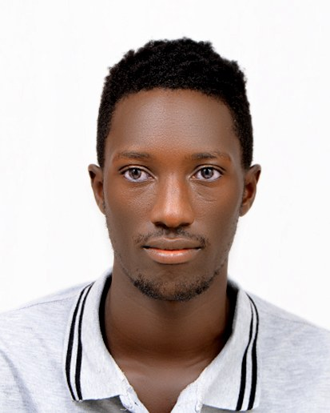

Information Technology graduate. I build software for the people who grow, harvest and heal.
Bachelor of Information Technology, Muteesa I Royal University. I design and build offline-first apps, GIS maps and web systems for farming and health in Uganda, and I test them with the people who will use them.

A view-only, offline-first mobile app that lets oil palm farmers of the Ssese Oil Palm Growers Co-operative Society (SOPGCO) check their harvests, deductions and loans. My final year project, supervised by Eng. Kyasanku Shaban.
74% of the farmers I surveyed had lost a harvest receipt in the past year, often on the boat to the mill. 79% could not verify that deductions were correct, and every farmer with a loan was unsure of the balance.
A Flutter app with a local SQLite database. It shows harvest records, shared vehicle losses, itemised deductions, loan balances and net earnings, and works fully without internet.
50 farmer questionnaires, 12 key informant interviews and 3 focus groups across Bujumba, Kyamuswa and Mugoye sub-counties, then task-based usability testing.
15 farmers tested nine tasks. Eight cleared the 70% first-attempt benchmark, and every task reached 93% to 100% with assistance. The weakest task, checking loan interest, led me to redesign that screen.
| Statement | Mean score |
|---|---|
| I would use this application again | 4.7 |
| I would recommend it to other farmers | 4.6 |
| All seven statements | above 4.0 |
I grew up in Bujjumba, Kalangala, in a farming community, so I build for real problems I've seen first-hand. Next I want to work on technology for coffee, from traceable sales to online trading.
Languages: English and Luganda (native).
A one-page PDF with my education, experience, projects and referees.
Contact details available on request.
Immediately available and open to relocation. The fastest way to reach me is WhatsApp.